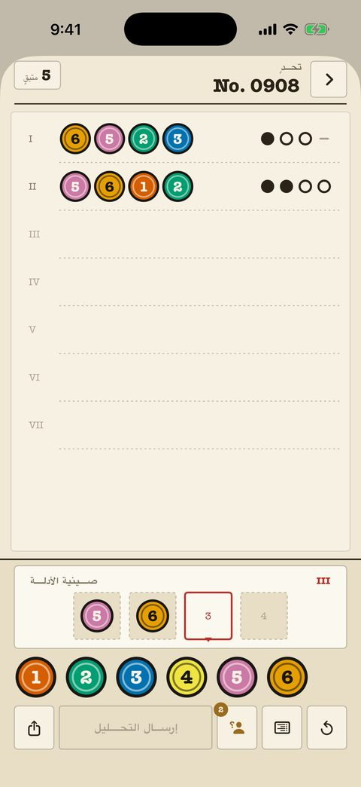

قضايا كلاسيكية
240 قضية من المبتدئ إلى المحترف، كل واحدة ورقة مرقّمة في الملف. عدّاد المحاولات في الأعلى؛ والعلامات حبر خالص — نقطة، حلقة، شرطة — لا تعتمد على اللون أبدًا.
- كل تحليل سابق يبقى على الورقة للمقارنة.
- الملاحظات على اللوحة تحدد الألوان المستبعدة والمؤكدة.
- إعداد «علامات الأشكال» يعطي كل لون شكلًا مميزًا.
- أول 40 قضية مجانية.